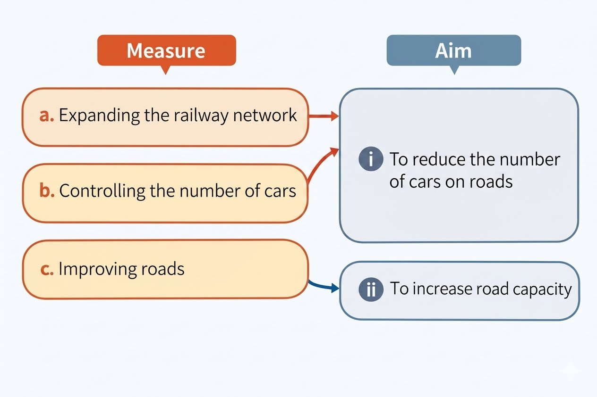

S1 Geography Final Revision · Hong Kong Curriculum
Appears in Section A • B • C • Links to Unit 4
📌 Exam tip: For every urban problem in Unit 4, know at least one solution from Unit 5.
Structured questions often pair a problem with a solution — e.g. "Explain one solution to traffic congestion."
Name the solution, explain how it works, and give a specific Hong Kong example.
5.1 How can we tackle housing problems?
5.1.1 Building new towns and new development areas
Measure
How it works
Example
Develop new towns
Build large-scale residential towns in the New Territories with housing, transport, and community facilities
Tseung Kwan O, Tin Shui Wai, Tung Chung
New Development Areas (NDAs)
Expand existing new towns or create new ones to provide more public and private housing
Kwu Tung North, Fanling North, Hung Shui Kiu
Lantau Tomorrow Vision
Reclaim artificial islands off Lantau to build a new city district
Planned project — will provide hundreds of hectares of land
Transitional housing
Short-term housing on vacant land while waiting for permanent public housing
Modular social housing in empty government sites
Light public housing
Quick-to-build prefabricated units for those waiting on traditional public housing
Launched 2023; faster to construct
5.1.2 Urban renewal
Measure
How it works
Example
URA redevelopment
Old buildings pulled down and replaced with modern buildings; roads widened; community facilities and open space added
Kwun Tong Town Centre, To Kwa Wan, Sham Shui Po
Regulate subdivided flats
Minimum floor area requirements; fire safety standards; proper sanitation
Applies to all subdivided units
Landlord registration scheme
Register landlords to ensure compliance with housing standards
Improves accountability and living conditions
Social support
NGOs provide community services for subdivided flat residents
e.g. Caritas, Salvation Army
5.1.3 Redeveloping aged public housing
Many old public housing estates are over 40 years old and need redevelopment.
Measure
How it works
Example
Demolish and rebuild
Aged estates are demolished and rebuilt at higher density, providing more units with modern facilities
Wah Fu Estate, Shek Kip Mei Estate, Ma Tau Wai Estate
Interim rehousing
Affected residents are offered new units or temporary housing during redevelopment
Relocation to nearby estates
5.1.4 Changing land uses
Measure
How it works
Example
Rezoning agricultural land
Change land use from agriculture to residential to free up land for housing
Several sites in the New Territories
Developing brownfield sites
Convert abandoned industrial or storage land into housing
Brownfield sites in Yuen Long, Fanling
Converting industrial buildings
Allow older industrial buildings to be converted into residential use
Pilot scheme for industrial buildings in older districts
Land resumption
Government resumes private land for public housing projects under the Land Resumption Ordinance
Various sites across Hong Kong
5.2 How can we reduce traffic congestion?

Expanding the railway network
The government plans to build more railway lines in the future.
Measure
How it works
Expand the railway network
Build more railway lines to connect more districts and reduce reliance on roads (Tuen Ma Line, Shatin to Central Link)
Bus route optimisation
Adjust bus routes; introduce express routes; bus-bus interchanges
Public transport interchanges
Design stations where MTR, buses, minibuses connect seamlessly
Controlling the number of cars
Measure
How it works
Raise first registration tax
Increase tax on new car purchases to discourage people from buying cars
Improve bus routes
Better bus routes and services to encourage the use of public transport instead of private cars
Park-and-ride discounts
Buses and minibuses offer discounts for drivers who park at designated lots and take public transport into the city
High parking fees / limited parking
Expensive and scarce parking in urban areas discourages driving
Electronic Road Pricing (ERP)
Charge drivers for using congested roads at peak times — proposed but not yet implemented
Tunnel tolls
Toll charges for cross-harbour and mountain tunnels to manage demand
Improving roads
Measure
How it works
Example
Build new roads
New roads are built to ease traffic flows in urban areas
Central-Wan Chai Bypass — commuting time from Eastern to Western reduced from 45 mins to less than 10 mins
Improve existing roads
Government improves the capacity and safety of existing roads
Widening Tuen Mun Road reduced traffic congestion and accidents
⚠️ MC trap:"Building more roads is the best long-term solution to traffic congestion."
→ False. New roads attract more drivers (induced demand), so congestion often returns.
The city cannot build its way out of congestion — managing demand is essential.
5.3 How can we ease pollution problems?
Air pollution
The government has various measures to tackle air pollution:
Road traffic
Measure
How it works
Phase out diesel cars
Ban new diesel private cars; discourage existing diesel vehicles through higher taxes
Subsidise electric buses
Government subsidises bus companies to replace diesel buses with electric buses
Lower first registration tax for electric cars
Reduce tax to encourage the switch from petrol/diesel to electric vehicles
Power supply
Measure
How it works
Use less coal
Reduce reliance on coal-fired power plants
Use more natural gas and non-fossil fuels
Switch to cleaner-burning natural gas; increase nuclear power imported from Mainland
Develop renewable energy
Solar energy and wind power projects (e.g. solar farms, offshore wind farms)
Land pollution (solid waste)
The government encourages people to reduce and recycle waste at source.
Measure
How it works
Solid Waste Charging Scheme
The more waste we produce, the more we have to pay — follows the polluter-pays principle
Waste reduction and recycling
Reduce packaging; avoid single-use plastics; food waste recycling; more recycling bins and education
Expand landfills
Extend the capacity of the three existing landfills
Build an incinerator at Shek Kwu Chau
Burn waste to reduce volume — new incinerator planned to handle non-recyclable waste
Noise pollution
Measure
How it works
Pass laws to limit noise in public places
Legal controls on noise from businesses, street performances, and public activities
Low-noise piling equipment
Use quieter piling machines on construction sites; regulate the time allowed for piling
Noise barriers and green belts
Build barriers and plant green belts between busy roads and residential areas
Building design
Double-glazed windows; acoustic insulation in new residential buildings
Water pollution
The government has built sewers and sewage treatment plants to cope with water pollution.
Measure
How it works
Build sewers and sewage treatment plants
Government constructs and upgrades sewers and treatment facilities across the city
Harbour Area Treatment Scheme (HATS)
One of the major projects — centralised sewage treatment at Stonecutters Island with chemically enhanced primary treatment
Sewage charges
Charges imposed on households and businesses to encourage people to use less water
Livestock waste control
Regulations on farming waste discharge; centralised treatment facilities
Light pollution
There are no laws regulating light pollution in Hong Kong. Instead, the government relies on voluntary measures.
Measure
How it works
Charter on External Lighting
Some businesses support the charter by switching off decorative lights at night — a voluntary scheme, not legally binding
5.4 How can we manage urban decay?
Redevelopment by URA
Old buildings are pulled down and replaced with modern buildings. Roads are widened, and more community facilities and open space are provided.
Measure
How it works
Example
URA redevelopment projects
URA acquires old buildings, demolishes them, and rebuilds with proper planning; includes widening roads and adding community facilities and open space
Kwun Tong Town Centre, To Kwa Wan, Sham Shui Po
Compulsory sale
Under the Land (Compulsory Sale for Redevelopment) Ordinance, apply to force sale if 80–90% owner consent is reached
Speeds up redevelopment when a few owners block progress
Building rehabilitation
Maintenance works are carried out to slow down the aging of buildings and urban decay. Building facilities are also upgraded to meet modern safety standards.
Measure
How it works
Building Safety Loan Scheme
Low-interest loans for owners to repair and maintain buildings
Operating Fund for Owners' Corporations
Financial support to help owners set up and run an owners' corporation
Building Safety Improvement Scheme
Subsidies for safety-related repairs (fire safety, structural repairs)
Minor works / beautification
Facade improvements, street-level upgrades, landscaping in old districts
Heritage and neighbourhood preservation
Buildings with historical and cultural value are protected and restored for new uses.
Measure
How it works
Adaptive reuse
Preserve tong lau and historic buildings by converting to new uses (e.g. PMQ, Tai Kwun, Blue House)
District revitalisation
Improve streetscape, signage, and public spaces without total demolition
⚠️ MC trap:"The URA is only responsible for redevelopment."
→ False. The URA takes a four-pronged approach: redevelopment, rehabilitation, heritage preservation, and revitalisation.
Home Ownership Scheme — subsidised flats sold below market price to lower-income families
GSH
Green Form Subsidised Home Ownership Scheme — for PRH tenants and applicants
Transitional housing
Short-term housing on vacant land while waiting for permanent public housing
Light public housing
Quick-to-build prefabricated public housing units (launched 2023)
ERP
Electronic Road Pricing — charging drivers for using congested roads at peak times
HATS
Harbour Area Treatment Scheme — centralised sewage treatment for Victoria Harbour
T·Park
Waste-to-energy facility; reduces landfill volume by 90%
Induced demand
Building more roads → more drivers → congestion returns
Compulsory sale
Legal mechanism for redevelopment when 80–90% owner consent is reached
Adaptive reuse
Converting old buildings to new purposes while preserving heritage value
EPR
Extended Producer Responsibility — producers pay for end-of-life collection and recycling
Exam-style practice questions
Section A — Multiple Choice (1 mark each)
Q1
Which of the following is a solution to traffic congestion that manages demand rather than increasing supply?
A. Electronic Road Pricing
B. Building a new tunnel
C. Widening existing roads
D. Adding more lanes to a highway
Q2
The URA's approach to urban decay includes all of the following except:
A. Redevelopment
B. Rehabilitation
C. Relocation
D. Revitalisation
Q3
Harbour Area Treatment Scheme (HATS) is a solution to which pollution problem?
A. Air pollution
B. Water pollution
C. Land pollution
D. Noise pollution
Section B — True or False (1 mark each)
Q4
"Building more roads is an effective long-term solution to traffic congestion."
False — induced demand means new roads fill up quickly.
Q5
"T·Park is a waste-to-energy facility that reduces the volume of waste sent to landfills."
True — T·Park incinerates waste and generates electricity, reducing landfill volume by ~90%.
Section C — Structured Question (6 marks)
Q6 — Refer to the case study of Kwun Tong Town Centre redevelopment
(a) Describe two housing problems in Hong Kong that the government needs to tackle. (2 marks)
(b) Explain one solution to traffic congestion and one solution to air pollution in Hong Kong. (4 marks)
Suggested structure:
Name the solution → Explain how it works → Give a specific Hong Kong example
e.g. "Electronic Road Pricing (ERP) charges drivers for using congested roads during peak hours, which reduces traffic during busy times and encourages public transport use. It has been proposed for Central and Wan Chai."
✅ Revision checklist
Tick each box as you revise:
I can explain how the government tackles housing shortage (public housing, land supply, transitional housing)
I can describe how the government addresses poor living environment in subdivided flats (regulation, redevelopment)
I can list 3 ways to reduce traffic congestion (public transport, car restraint, traffic management)
I understand why building more roads is not a long-term solution (induced demand)
I can describe at least one solution for each of the 5 pollution types (air, land, water, noise, light)
I can explain the four-pronged approach of the URA
I know what HATS, T·Park, ERP, HOS, and GSH stand for
I can link solutions in Unit 5 to the corresponding problems in Unit 4
I understand the difference between redevelopment and rehabilitation